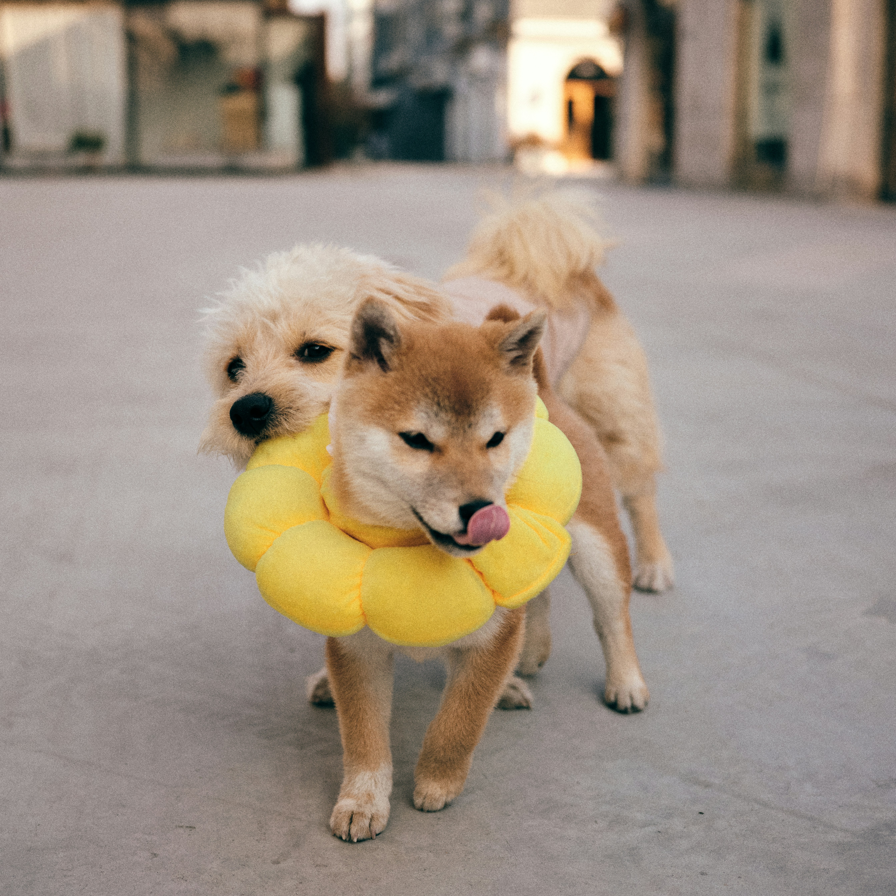
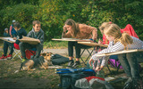
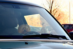

Monday, March 16, 2026
Today's Paper
Labs
Huskies
Collies
Pitties
Great Danes
Small Dogs
Medium Dogs
Big Dogs
JUST NOW
"Local Stray Saves Boy from Burning Building"
A silly joke on the internet turns wholesome as hundreds of dollars are raised to pay for the surgeries of dogs in need. “WeRateDogs.com” began as an internet joke account, but as it grew in popularity, the creator used his platform for good. The merch he makes donates 15% to the 15/10 foundation.
Local dog has been recorded as becoming so happy to see his owners that he runs headfirst into a table.

The Pitt Lab Mutt, Reese, was running along her yard when she decided to run into the chicken wire marking off the garden. After receiving stitches, she is said to be “a problem” by owners due to her attempts to run around.
Breeders have been attempting improve the breed standards for Pugs and French Bulldogs in order to improve the health of the dogs. There are pushes to make the two breeds appear more like older variations with longer snouts and fewer breathing issues. These improvements, while still not endorsed by competitions, are praised by the common people.
Puppies need baskets, new study shows.
The most popular costume for your pup this year: ghost dogs are back in style!

Students undertake experiment that shows dogs worsen focus.

Local dog learns to drive. Owner says, "I wanted to be a passenger princess."